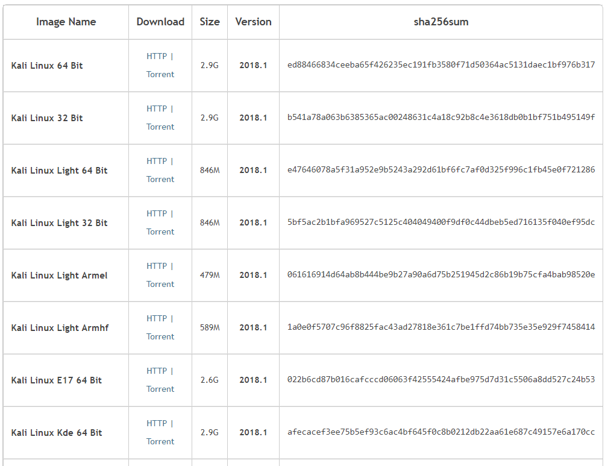
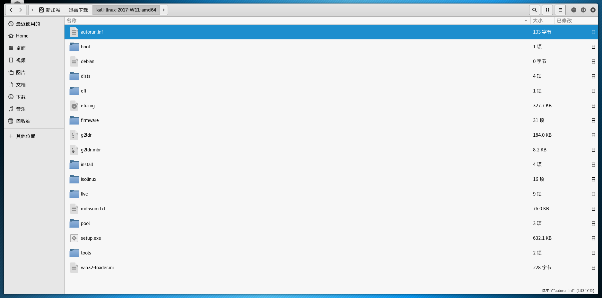
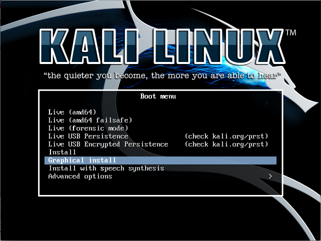
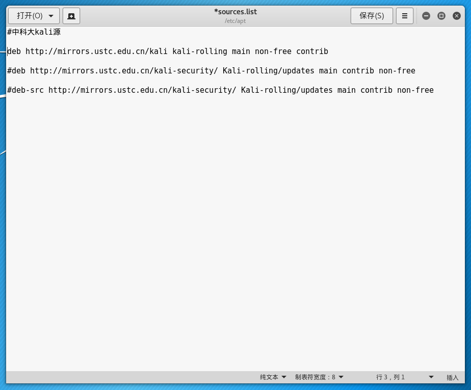
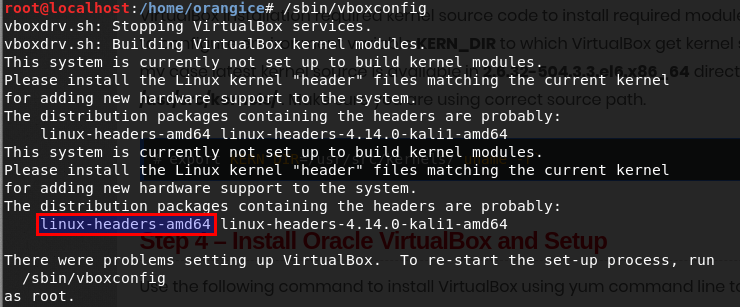

Kali和Ubuntu一样都是基于Debian的Linux发行版，kali前身是BackTrack，它集成了许多工具，比如nmap（端口扫描软件）。Wireshark（抓包工具）,该系统主要用于数字取证，渗透测试，黑客攻防。用户可通过硬盘、live CD或live USB运行Kali Linux。Kali Linux既有32位和64位的镜像。可用于x86 指令集。同时还有基于ARM架构的镜像，可用于树莓派和三星的ARMChromebook。由于kali的伟大，因此在安全界有Kali认证证书。
kali安装
镜像下载，下载完之后一定要校检HASH值，并比对官方给出的HASH列表。
将U盘格式化为FAT32格式，U盘大小至少8G
将下载的ISO文件解压到U盘根目录，即打开U盘就是下图所示，建议用Rufus/Win32Disk创建安装盘。
进入启动系统性选择
- DELL在开机刚出现LOGO的时候，快速按F12
- ASUS在开机刚出现LOGO的时候，看快速按Esc
- Lenove在关机状态下，通过电脑的一个小孔（仔细找一下）里的按钮进入，联想牌子众多，建议去网上找找U盘启动的方法
进入U盘系统后，选择蓝条所选的选项
此处省略
kali源设置
kali官方更新源由于在国外，更新速度非常慢，因此为了节省软件更新和安装的时间，把更新源换为国内的，打开/etc/apt/sources.list
1
2
3#中科大Kali源
deb http://mirrors.ustc.edu.cn/kali kali-rolling main non-free contrib
deb-src http://mirrors.ustc.edu.cn/kali-security/ Kali-rolling/updates main contrib non-free打开终端执行以下命令来更新。
1
2
3
4apt-get update(获取更新)
apt-get upgrade(安装更新)
apt-get dist-upgrade
apt-get install -f(解决依赖问题)
软件安装
Chrome
切换到root
1
$ su root
用wget下载谷歌浏览器最新Debian安装包
1
# wget https://dl.google.com/linux/direct/google-chrome-stable_current_amd64.deb
安装gdebi，这个包管理器会自动帮你下载好依赖包
1
# apt-get install gdebi
用gdebi安装Google Chrome
1
# gdebi google-chrome-stable_current_amd64.deb
出于安全原因，不能以root身份运行Chrome浏览器，需要创建一个新用户去使用，也可以在快捷方式上添加–no-sandbox。
输入法
谷歌拼音
1
apt-get install fcitx-googlepinyin
如果没有输入法则需要到fcitx配置中的输入方法（input methond）选项中（左下角有一个” + “），搜索并添加 google pinyn。
Haroopad
到官网下载deb包
下载地址dpkg -i 包名
VirtualBox
到官网下载deb包，我选择的是Debian最新版
下载地址dpkg -i 包名
如果使用的时候遇见提示”/sbin/vboxconfig as root”, 则执行”/sbin/vboxconfig“，若出现下图状况，安装红框框中的，”apt-get install linux-headers-amd64“,注意是你出现的那个名字，可能和我的不一样。最后执行“/sbin/vboxconfig”。

安装问题解答
如果启动后进入GRUB命令行界面，说明grub.cfg丢失或损坏，此时可以通过命令行进入系统
1
2
3
4
5
6
7grub>ls //查看分区
(hd0,gpt1) (hd0,gpt2) (hd0,gpt3)
grub>set root=(hd0,gpt3) //我的系统分区是(hd0,gpt3)
grub>linux /boot/vmlinuz* ro root=/dev/sda3
//我的根目录分区是sda3,*表示内核型号，建议输入/boot/vmlinuz之后按tab键自动补全
grub>initrd /initrd.img
grub>boot进入系统后打开终端，执行
1
2
3
4
5
6fdisk -l
mkdir /mnt/efi
mount /dev/sda1 /mnt/efi
grub-install -v
update-grub
cp /boot/grub/grub.cfg /mnt/efi/kali/grub